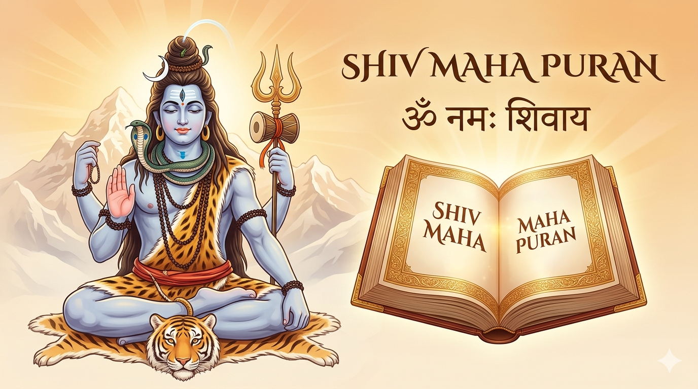

The Eternal Wisdom of Lord Shiva - Digital Dharmic Archive
The Shiv Purana is one of the eighteen major Puranas, dedicated to Lord Shiva. It explores the mysteries of creation, the nature of the soul, and the path to ultimate liberation. It is not merely a collection of stories but a complete guide to living a life of Dharma and devotion. By studying these sacred Samhitas, a devotee can dissolve all worldly attachments and merge with the infinite consciousness of Mahadeva.

Shri Shiv Maha Puran
The foundation of Shiv Puran. It details the glory of the Shiva Linga, the secret of the Omkaara mantra, and the essential rules for a devotee's daily conduct.
View Detailed SummaryThe largest Samhita covering the divine incarnations and cosmic battles of Lord Rudra across five major segments.
Explores the many incarnations of Shiva, including Nandi, Bhairava, and Hanuman, showcasing his diverse roles as a protector and teacher.
View Detailed SummaryDedicated to the twelve Jyotirlingas, their origins, and the specific merit gained by visiting these pillars of light.
View Detailed SummaryGlorifies the Divine Mother Parvati, detailing her manifestations and the laws of Dharma and Karma.
View Detailed SummaryA philosophical deep-dive into Sannyasa, the meaning of OM, and the realization of Non-Duality (Advaita).
View Detailed Summary